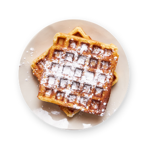

Waffles

This is a airy and crispy waffle
These buttermilk waffles are crisp on the outside and tender in the middle
Ingredients
- 2 cups all-purpose flour
- 2 tablespoons white sugar
- 2 teaspoons baking powder
- 1 teaspoon baking soda
- 1/2 teaspoon salt
- 2 cups low-fat buttermilk
- 1/3 cup melted butter
- 2 large eggs, lightly beaten
- 1 teaspoon vanilla extract
Steps
- Gather all ingredients.
- Whisk flour, sugar, banking powder, baking soda, and salt together in a bowl until evenly combined.
- Whisk buttermilk and melted butter together in a separate bowl; whisk in eggs.
- Stir buttermilk mixture into flour mixture until just combined and batter is slightly lumpy; stir in vanilla extract.
- Preheat a waffle iron according to manufacturer's instructions.
- To cook each waffle, pour enough batter into the preheated waffle iron to reach 1/2 inch from the edge. Cook according to manufacturer's instructions.